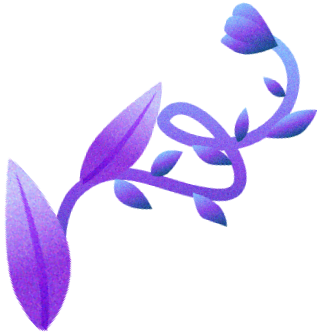

B12 – нуждающимся
Благотворительный проект
Vegan Russian
Витамин B12 — единственный нутриент, который не содержится естественным образом в растительной пище. Поэтому, веганкам и веганам нужно принимать его дополнительно на постоянной основе.
Подать заявкуУсловия участия
Вы веган или веганка
Вы не можете оплатить витамин самостоятельно
Вы согласны откладывать деньги на покупку витамина в будущем (на свой счёт или в копилку)
Скольким мы помогли
184
Как подать заявку
Возможно, вы можете купить B12 сами! Перед подачей заявки рассмотрите варианты приобретения:
- Обратитесь к врачу и попросите выписать вам инъекции витамина B12, так как вы не употребляете животные продукты. Они стоят дешево, но иногда их сложно найти в аптеках. Курс инъекций можно проставить в поликлинике. Важно также постоянно отслеживать уровень витамина.
- Попробуйте оформить рассрочку на Ozon или Wildberries. Так вы сможете тратить лишь небольшую посильную сумму в месяц (около 150 рублей).

Опишите Марине в сообщении ситуацию, из-за которой вы не можете купить B12 самостоятельно.
Подать заявкуПродукты,
обогащенные B12
Можно полагаться на получение B12 из обогащённой пищи или зубной пасты список таких продуктов – по ссылке.
СписокНаше
финансирование
Для оплаты B12 для нуждающихся мы используем пожертвования, реферальные программы и продажу рекламы.
Промо-кодыИз-за нестабильной ситуации в мире, мы полагаемся на несколько разных видов B12. Это Natrol и Betax. Какую именно добавку вы получите – неизвестно, это будет зависеть от ситуации в онлайн-магазинах. Наш лучший вариант можно использовать 2 года! Вы получите все инструкции при обращении.
